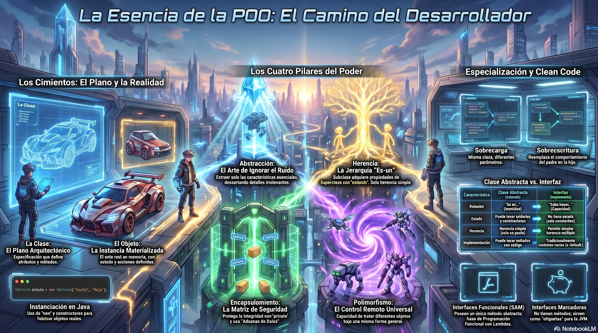

1. Sintaxis de Java y la Filosofía del Código Limpio

Antes de sumergirnos en los paradigmas arquitectónicos de alto nivel, es imperativo establecer una base sólida. En el desarrollo de software, la sintaxis no es solo un conjunto de reglas gramaticales para que el compilador entienda nuestras instrucciones; es el lenguaje con el que nos comunicamos con otros desarrolladores.[4] El concepto de “Clean Code” (Código Limpio) nos enseña que el código se lee muchas más veces de las que se escribe. [5]
La sintaxis fundamental de Java, desde la declaración de variables hasta las estructuras de control avanzadas, debe aplicarse con rigor profesional.[4] Nombrar variables adecuadamente es el primer paso. En lugar de utilizar identificadores genéricos como int d, un desarrollador profesional utiliza nombres descriptivos como int diasTranscurridos. Las estructuras de control, como los bucles for, while y las sentencias condicionales if-else, forman el flujo lógico de la aplicación. Sin embargo, como veremos más adelante, el abuso de condicionales anidados es un síntoma de un diseño pobre que debe ser mitigado mediante técnicas avanzadas de orientación a objetos.[7]
Antes de profundizar en la orientación a objetos, verifiquemos nuestro nivel de comprensión conceptual. Pregúntense por un instante: ¿Tienen clara la distinción anatómica entre una clase y un objeto? Si imaginamos que una clase es el plano arquitectónico detallado de una casa, el objeto es la casa física construida a partir de ese plano, con su propia dirección, color de pintura y muebles reales.[9] Con este concepto firmemente anclado en nuestra mente, podemos explorar cómo la industria resuelve el mayor enemigo del software: la duplicación.
2. El Problema de la Duplicación y la Necesidad de Abstracción
El módulo dos de nuestra materia se centra en diseñar sistemas reutilizables y extensibles.[11] Para entender el valor de las herramientas que Java nos ofrece, primero debemos enfrentarnos al problema que intentan resolver. Imaginen que son contratados para desarrollar un sistema de gestión para un zoológico masivo. Un programador novato, enfocado únicamente en la sintaxis básica, podría modelar el sistema de la siguiente manera [11]:
// Ejemplo de código con deficiencias arquitectónicas y duplicación
class Perro {
private int edad;
private double peso;
void hacerSonido() {
System.out.println("Ladra");
}
}
class Gato {
private int edad;
private double peso;
void hacerSonido() {
System.out.println("Miauu");
}
}A primera vista, este código cumple con los requisitos iniciales. Sin embargo, en el mundo real del desarrollo de software, los requisitos cambian constantemente. Pronto, la administración del zoológico solicitará agregar leones, tigres, elefantes, lobos y cientos de especies adicionales.[11] El resultado será un desastre arquitectónico: código repetido en cientos de archivos, un mantenimiento extremadamente difícil y un nivel de abstracción nulo.[11] Si el día de mañana la regulación exige que la variable peso cambie de double a un objeto especializado MedidaPeso, el desarrollador tendrá que modificar el código en cientos de clases distintas, arriesgándose a introducir errores críticos en el sistema.
La industria automotriz nos ofrece una analogía perfecta para comprender la solución. Una fábrica de vehículos no diseña cada modelo de automóvil partiendo desde cero.[11] No reinventan la rueda, el sistema de transmisión o el chasis para cada auto nuevo. En su lugar, utilizan un modelo base estructural sobre el cual añaden las características específicas.[9] Esta falta de un mecanismo de reutilización y modelado de jerarquías en nuestro código inicial nos conduce directamente a los pilares de la Programación Orientada a Objetos.[11]
3. Encapsulamiento: Protegiendo la Integridad del Estado
El primer muro de defensa en el diseño de software es el encapsulamiento. Este pilar consiste en ocultar los detalles internos de implementación de un objeto y exponer únicamente una interfaz pública segura para interactuar con él.[14] En términos prácticos, significa declarar los atributos de una clase como private o protected y proporcionar métodos de acceso controlados (getters y setters).
Imaginemos una máquina expendedora de bebidas. Como usuarios, solo vemos la ranura para insertar monedas y los botones para seleccionar el producto. No tenemos acceso directo a los engranajes internos, la caja fuerte del dinero o los circuitos electrónicos.[16] Si tuviéramos acceso directo, podríamos alterar el funcionamiento de la máquina, romperla o extraer productos sin pagar.[16] En Java, el encapsulamiento previene que otras partes del código alteren el estado interno de un objeto de forma inválida.
// Aplicación del Encapsulamiento siguiendo Clean Code
public class CuentaBancaria {
private double saldo; // Atributo protegido del acceso directo
public CuentaBancaria(double saldoInicial) {
if (saldoInicial >= 0) {
this.saldo = saldoInicial;
} else {
this.saldo = 0;
}
}
public void depositar(double monto) {
if (monto > 0) {
this.saldo += monto; // Modificación controlada del estado
}
}
public double getSaldo() {
return this.saldo;
}
}En este escenario, es matemáticamente imposible que un código externo asigne un saldo negativo a la cuenta, ya que el atributo está protegido y el método depositar incluye lógica de validación. Este nivel de seguridad es fundamental para la estabilidad de sistemas de nivel empresarial.
4. Herencia: Construyendo Jerarquías y Reutilización
El segundo pilar de la POO es la herencia. Se define como el mecanismo mediante el cual una clase (denominada clase hija o subclase) adquiere automáticamente los atributos y métodos de otra clase (denominada clase padre o superclase).[11] Arquitectónicamente, la herencia modela una relación estricta de tipo “es un” (is-a).[11]
Volviendo a nuestro problema del zoológico, la herencia nos permite abstraer las características compartidas en una clase general llamada Animal.[11] En términos de la vida real, es como la genealogía humana: un padre transmite características fundamentales a su hijo, y este desarrolla rasgos específicos que lo distinguen, sin perder su estructura base.[11]
// Implementación de Herencia en Java
class Animal {
protected String nombre; // Accesible por subclases
public Animal(String nombre) {
this.nombre = nombre;
}
public void hacerSonido() {
System.out.println("Sonido genérico");
}
}
class Perro extends Animal {
private String raza;
public Perro(String nombre, String raza) {
super(nombre); // Invocación al constructor de la superclase
this.raza = raza;
}
@Override
public void hacerSonido() {
System.out.println("El perro ladra");
}
}Con la palabra clave extends, eliminamos por completo la duplicación de código. Cualquier especie nueva que ingrese al sistema heredará la lógica fundamental.[11] Además, el uso de la directiva super nos permite invocar controladamente los constructores o métodos de la superclase, garantizando que la inicialización del estado del objeto padre se complete antes de aplicar las especializaciones de la clase hija.[14]
Precauciones y la Regla de Composición sobre Herencia
Hagamos una pausa reflexiva. Si la herencia es tan poderosa, ¿deberíamos usarla para todo? La respuesta en la industria es un rotundo no. La herencia crea un acoplamiento extremadamente rígido. Si la clase padre sufre una modificación, todas las subclases heredan ese cambio, lo cual puede generar efectos secundarios imprevistos.[11]
Debemos ser rigurosos con la prueba de relación “es un”. ¿Un avión es un animal porque ambos pueden volar? Absolutamente no.[11] Forzar esa relación mediante herencia producirá un sistema monolítico e incomprensible. En la industria, frente a relaciones de tipo “tiene un” (has-a) o capacidades compartidas que no definen la identidad de la entidad, los ingenieros optan por el principio de “favorecer la composición o las interfaces sobre la herencia”.[14]
5. Polimorfismo: La Magia de las Múltiples Formas
Llegamos al concepto que verdaderamente desata el poder del diseño de software: el polimorfismo. Derivado de raíces griegas que significan “muchas formas”, el polimorfismo es la capacidad que permite que un mismo mensaje o invocación de método desencadene comportamientos radicalmente distintos dependiendo del objeto que lo recibe.[11]
Imaginen el botón de “Encender” en diferentes dispositivos tecnológicos.[11] Si presionan ese botón en un televisor, la pantalla se ilumina; si lo presionan en un teléfono móvil, el sistema se desbloquea; si lo presionan en una computadora portátil, el sistema operativo comienza su secuencia de arranque.[11] La instrucción (el mensaje) es exactamente la misma para el usuario, pero el comportamiento dinámico se adapta a la naturaleza del receptor.[11]
En Java, el polimorfismo se manifiesta en dos dimensiones técnicas que todo desarrollador debe dominar a la perfección: el polimorfismo estático y el dinámico.[14]
Análisis del Polimorfismo Estático y Dinámico
Para una comprensión absoluta, se presenta la diferenciación mecánica entre ambos paradigmas.
| Característica Técnica | Polimorfismo Estático | Polimorfismo Dinámico |
|---|---|---|
| Definición Operativa | La resolución de la llamada al método ocurre en tiempo de compilación.[14] | La resolución de la llamada al método ocurre en tiempo de ejecución (runtime).[14] |
| Mecanismo Subyacente | Sobrecarga de métodos (Overloading).[14] | Sobrescritura de métodos (Overriding).[14] |
| Estructura de Firmas | Mismo nombre de método, pero obligatoriamente diferentes parámetros (tipo, número o ambos).[14] | Idéntico nombre, idénticos parámetros e idéntico tipo de retorno que el método de la superclase.[14] |
| Ámbito Jerárquico | Sucede típicamente dentro de los límites de una misma clase.[14] | Requiere una jerarquía de herencia entre una clase padre y una clase hija.[14] |
El polimorfismo dinámico es el pilar de la flexibilidad arquitectónica. Utilizando el ejemplo de la anotación @Override, la Máquina Virtual de Java (JVM) emplea un mecanismo de enlace tardío (late binding).[14] Cuando el código invoca un método a través de una variable de referencia de la clase padre, la JVM ignora el tipo de la variable y determina qué método ejecutar basándose en el tipo del objeto físico creado en memoria.[14]
Ejemplos Reales en la Industria del Software
El impacto del polimorfismo dinámico en empresas como Netflix, Spotify o plataformas financieras es colosal.[25] Tomemos el ejemplo de una pasarela de pago para comercio electrónico. Un desarrollador junior podría escribir una clase con múltiples condicionales para verificar si el usuario paga con tarjeta, PayPal o transferencia bancaria.[14] Un ingeniero full stack utiliza polimorfismo: define una superclase o interfaz Pago con un método abstracto procesarTransaccion(). Luego, crea clases específicas como PagoTarjeta y PagoPayPal que sobrescriben dicho método.[14] El motor central de la tienda solo necesita llamar a pago.procesarTransaccion(); la JVM se encarga de dirigir el flujo al algoritmo correcto.[25]
Consideremos otro ejemplo humanizado que detalla la reducción de la carga cognitiva.[14] Supongamos que tenemos una jerarquía corporativa con una clase abstracta Persona y subclases Deportista e Informatico.[14] Ambas heredan un método correr(). El Deportista lo sobrescribe para devolver una velocidad de 7 km/h, y el Informatico lo sobrescribe para devolver 3 km/h.[14]
// Tratamiento uniforme mediante Polimorfismo
List<Persona> personal = new ArrayList<>();
personal.add(new Deportista("Laura"));
personal.add(new Informatico("Miguel"));
double sumaVelocidades = 0;
for (Persona p : personal) {
// El polimorfismo ejecuta dinámicamente el comportamiento adecuado
sumaVelocidades += p.correr();
}
double promedio = sumaVelocidades / personal.size();El desarrollador que escribe el bucle principal no necesita conocer la existencia de informáticos o deportistas, ni le importará si en el futuro se añade la clase Bombero.[14] El código principal permanece inalterable y asombrosamente sencillo.[14]
6. Clases Abstractas e Interfaces: Definiendo Esqueletos y Contratos
En el desarrollo de software, no basta con saber escribir clases; se requiere comprender los niveles de abstracción. Llegamos así al uso de Clases Abstractas e Interfaces, herramientas que nos permiten establecer las reglas del juego en nuestra arquitectura.[11]
Detengámonos un segundo a pensar: ¿Tiene sentido instanciar un objeto del tipo genérico Vehiculo o Persona? Si vemos a alguien en la calle, no vemos a una “Persona genérica”, vemos a un médico, a un estudiante, a un ingeniero.[11] Los conceptos generales existen en nuestra mente como plantillas, pero no como entes físicos.
La Clase Abstracta: El Esqueleto Base
Una clase declarada con la palabra clave abstract se convierte en un “esqueleto” estructural que no puede ser instanciado directamente.[14] Su propósito es proveer una base común para sus subclases. Una clase abstracta puede contener variables de estado, constructores, métodos con lógica implementada y métodos abstractos.[14]
Un método abstracto es aquel que carece de cuerpo de implementación.[14] Actúa como un contrato inflexible: obliga a cualquier clase hija no abstracta a proporcionar su propia implementación específica.[14] Utilizando el ejemplo anterior, la clase Persona puede definir los atributos comunes nombre y apellidos para evitar la repetición de código (cumpliendo con el principio DRY), y declarar un método abstracto correr().[14] Así garantizamos que todo ser humano en nuestro sistema sepa correr, pero delegamos el “cómo” a las especialidades (el deportista rápido, el informático lento).[14]
Las Interfaces: Modelando Capacidades Transversales
Mientras que una clase abstracta define lo que un objeto “es”, una Interfaz en Java define lo que un objeto “puede hacer”.[11] Las interfaces son contratos puros de comportamiento que trascienden las jerarquías de parentesco.[11]
Imaginemos habilidades en el mundo real. Ser un “volador” o un “nadador” no define la especie biológica o mecánica de una entidad.[11] Un pájaro vuela, un avión vuela, e incluso un dron vuela. Es imposible crear una clase padre Volador de la cual hereden los tres sin corromper el modelo de datos, especialmente considerando que Java prohíbe la herencia múltiple de clases para evitar la ambigüedad del “Diamante de la Muerte”.[11]
La solución es la interfaz.[11] Declaramos interface Volador { void volar(); }. Ahora, la clase Pajaro puede heredar genéticamente de Animal e, independientemente, implementar la interfaz Volador (class Pajaro extends Animal implements Volador).[11]
| Dimensión Arquitectónica | Clases Abstractas | Interfaces |
|---|---|---|
| Naturaleza del Vínculo | Establece una relación ontológica: “Es un” (Is-a). | Define una capacidad operativa: “Puede hacer” (Can-do). |
| Herencia y Composición | Limitado estrictamente a herencia simple por clase. | Permite implementación múltiple; una clase puede adoptar n interfaces. |
| Preservación del Estado | Soporta variables de instancia para retener estado mutable. | No conserva estado; solo admite constantes globales (public static final). |
| Mecanismo de Inicialización | Dispone de constructores para inicializar su estado base. | Carece de constructores en su totalidad. |
| Propósito Industrial | Compartir código base sustancial y evitar duplicación de propiedades. | Desacoplar arquitecturas, forjar contratos (APIs) y lograr polimorfismo transversal. |
7. Programación Funcional: Lambdas y Streams en Java
La evolución de Java hacia la programación moderna introdujo características del paradigma funcional, complementando magníficamente la POO. En la industria, las operaciones repetitivas sobre colecciones de datos han sido optimizadas para ser más legibles y concisas.[14]
El uso de Lambdas permite pasar bloques de código (funciones anónimas) como si fuesen datos, especialmente al trabajar con Interfaces Funcionales (interfaces con un único método abstracto).[29] Sin embargo, la verdadera revolución radica en la Stream API.[14]
Un Stream representa una secuencia de elementos que admite operaciones de agregación secuenciales y paralelas. A diferencia de las colecciones que almacenan datos, los Streams procesan datos.[14] Retomando nuestro ejemplo polimórfico de calcular la velocidad promedio de una lista heterogénea de personas (deportistas e informáticos), la programación funcional nos permite reducir múltiples líneas de un bucle for a una expresión declarativa asombrosa [14]:
// El poder combinado del Polimorfismo y la Programación Funcional
double promedioVelocidad = personal.stream()
.mapToDouble(Persona::correr)
.average()
.orElse(0.0);En este fragmento, el método referenciado Persona::correr se aplica de forma dinámica y polimórfica a cada elemento del flujo.[14] Si el elemento es un deportista, extraerá un 7; si es informático, un 3.[14] El motor funcional agrupa, suma y promedia internamente, generando un código limpio, sin efectos secundarios y altamente optimizado para procesadores multinúcleo.[14]
8. Principios SOLID: El Estándar de Oro del Código Limpio
Dominar la sintaxis y los pilares de la POO es comparable a conocer los movimientos de las piezas de ajedrez; sin embargo, para ganar la partida del desarrollo empresarial, se requieren estrategias de diseño superiores. En el año 2000, Robert C. Martin postuló cinco principios fundamentales, conocidos como SOLID, que guían a los ingenieros en la creación de arquitecturas mantenibles, tolerantes al cambio y resistentes a la degradación.[8]
Analicemos detenidamente los tres primeros principios, que son los más impactantes para el diseño inicial de sistemas en Java.[14]
Principio de Responsabilidad Única (SRP - Single Responsibility Principle)
El SRP estipula una regla intransigente: Una clase debe tener una y solo una razón para cambiar.[14] Pedagógicamente, significa que cada componente de nuestro sistema debe realizar “un solo trabajo” de manera excepcional.[14]
Imaginemos un bolígrafo en el mundo real. Su única responsabilidad es transferir tinta al papel. Si el bolígrafo se queda sin tinta, se reemplaza el cartucho (otra entidad); si nos equivocamos al escribir, usamos un borrador (otra entidad).[33] El bolígrafo no debe intentar ser un borrador ni un estuche de almacenamiento.[33]
En el ámbito del software, el artículo de referencia nos presenta un ejemplo claro de violación de este principio: una clase SavingsAccount (Cuenta de Ahorros).[14] Inicialmente, la clase maneja transacciones de débito y crédito. Posteriormente, un desarrollador inexperto añade un método sendUpdates() para enviar notificaciones al cliente mediante SMS o correo electrónico.[14]
Esta decisión arquitectónica es fatal. La clase ahora tiene dos motivos para ser modificada: una alteración en la lógica financiera o un cambio en la API del proveedor de correo electrónico o WhatsApp.[14] La solución dictada por el SRP es la refactorización mediante separación de responsabilidades: la lógica bancaria permanece en SavingsAccount, mientras que la funcionalidad de mensajería se externaliza hacia una nueva clase autónoma denominada Sender o ServicioNotificacion.[14]
Principio de Apertura/Cierre (OCP - Open/Closed Principle)
El OCP declara que las entidades de software (clases, módulos, funciones) deben estar abiertas para su extensión, pero cerradas para su modificación.[8] En términos prácticos, deberíamos ser capaces de incorporar nuevas funcionalidades al sistema sin tener que reescribir, alterar o poner en riesgo el código fuente que ya ha sido probado y está en producción.[14]
La analogía de la construcción modular explica perfectamente este concepto. Cuando deseamos expandir una casa prefabricada, no demolemos las paredes maestras ni alteramos los cimientos originales; simplemente adosamos nuevos módulos que se conectan en puntos de anclaje predefinidos.[11]
En Java, el OCP se implementa magistralmente a través del polimorfismo y las abstracciones. Consideremos una clase Cart (Carrito de Compras) que posee un método calculateCartValue().[14] Si este método evalúa el tipo de artículo mediante un bloque condicional masivo (ej. if (item.type ELECTRONIC) {...} else if (item.type GIFT) {…}), el sistema colapsará ante la evolución del negocio.[14] Para agregar un nuevo producto, como comestibles (Grocery), el programador estaría obligado a abrir y modificar la clase Cart, violando el principio y arriesgándose a introducir fallos en el cálculo de impuestos de productos existentes.[8]
La solución polimórfica consiste en transformar Item en una clase abstracta o interfaz que posea un método getValue().14 Posteriormente, se diseñan clases concretas como ElectronicItem o GroceryItem que heredan e implementan su propia lógica de cálculo interno.14 La clase Cart se simplifica radicalmente: simplemente recorre la lista de artículos y solicita el valor (item.getValue()) ignorando la tipología del objeto.14 El carrito queda cerrado a modificaciones, pero el sistema está infinitamente abierto a la adición de nuevos productos.
Principio de Sustitución de Liskov (LSP - Liskov Substitution Principle)
Formulado académicamente por la brillante científica Barbara Liskov en 1987, este precepto dictamina que los objetos de una superclase deben poder ser reemplazados por objetos de cualquiera de sus subclases sin que el programa interrumpa su ejecución normal o manifieste un comportamiento anómalo.[11] Es decir, la subclase debe mantener intacta la coherencia del comportamiento delineado por la clase base.
La violación clásica del LSP en el ámbito académico y profesional se ilustra con la jerarquía vehicular.[14] Supongamos la existencia de una superclase Vehicle equipada con un método startEngine() (arrancar motor).[14] La derivación de una subclase Car (Automóvil) no presenta conflictos. El diseño, no obstante, experimenta una fisura estructural severa si se introduce una subclase Bicycle (Bicicleta) que herede de Vehicle.[14]
Puesto que una bicicleta carece de componentes mecánicos para la combustión, su implementación del método startEngine() carece de sentido lógico. Frecuentemente, los programadores recurren a lanzar una excepción o dejar el método en blanco.[14] Si un módulo de control de tráfico procesa de manera polimórfica una lista de entidades Vehicle y ejecuta startEngine(), el sistema colapsará dramáticamente al iterar sobre una instancia de Bicycle.[14]
La estrategia de remediación requiere perfeccionar las abstracciones. En lugar de una relación directa y general, se deben instituir categorías taxonómicas intermedias, tales como MotorizedVehicle y NonMotorizedVehicle.[14] Así, el automóvil hereda las características motrices correspondientes y la bicicleta salvaguarda su coherencia estructural, erradicando los errores de sustitución en tiempo de ejecución.[14]
9. Sockets: Abstracción de la Comunicación en Red
Un desarrollador full stack moderno no trabaja en sistemas aislados. La información fluye constantemente entre clientes y servidores a través de redes globales.28 Para comprender cómo esto es posible en Java, debemos analizar la arquitectura Cliente-Servidor y su implementación mediante Sockets.
Una excelente analogía para la comunicación mediante Sockets es la dinámica de atención telefónica o el servicio de un restaurante de alta demanda. El Servidor actúa como la centralita telefónica corporativa o el recepcionista del establecimiento. Permanece en estado de escucha perpetua y pasiva sobre una “puerta” lógica específica (conocida como el Puerto de red, por ejemplo, el 8080) aguardando la llegada de peticiones. El Cliente, por su parte, es el usuario que toma el teléfono o se acerca a la puerta solicitando acceso y servicio hacia una dirección IP determinada.
En Java, este complejo entramado de protocolos TCP/IP se abstrae elegantemente a través de la POO. El servidor instancia un objeto de la clase ServerSocket, el cual dispone de un método bloqueante llamado accept(). Cuando un cliente, a través de su propia instancia de la clase Socket, se conecta a la dirección y puerto correctos, el ServerSocket despierta y retorna un nuevo objeto Socket dedicado exclusivamente a mantener la comunicación bidireccional con ese cliente específico, permitiendo que la centralita principal siga atendiendo otras peticiones en hilos (threads) paralelos.
La transferencia de información dentro de estos Sockets fluye en forma de bytes brutos (Input y Output Streams). La aplicación de los principios de Clean Code exige no manipular estos bytes rudimentarios manualmente, sino envolverlos (empleando el patrón Decorator) con clases especializadas de mayor nivel. Por lo tanto, envolvemos el flujo de entrada con clases como BufferedReader para facilitar la lectura de texto línea por línea, y el flujo de salida con PrintWriter para enviar datos formateados estructuradamente. El polimorfismo brilla incluso aquí, ya que estos “Decoradores” aceptan de manera uniforme flujos de memoria, archivos locales o, en este caso, flujos de red.
10. SWING: Ingeniería de Interfaces Gráficas y Eventos
Un software excepcional carece de valor si el usuario final no puede interactuar con él de manera intuitiva. Si bien en el entorno web contemporáneo dominan tecnologías de frontend como React o Angular 39, comprender las bibliotecas nativas de escritorio como Java SWING proporciona a los estudiantes una profunda comprensión de cómo interactúan los objetos bajo el paradigma impulsado por eventos (Event-Driven Programming).
SWING es un testimonio brillante de la superioridad de la POO. A diferencia de enfoques procedimentales donde se dibuja en pantalla mediante coordenadas brutas, SWING concibe cada elemento visible como un objeto con un estado interno meticulosamente encapsulado.[41] Un botón (JButton), un campo de entrada de texto (JTextField) o la ventana principal misma (JFrame) son instancias de clases que heredan métodos fundamentales de posicionamiento y renderizado de superclases magistrales como JComponent o Container.[41]
La dinámica operativa de una interfaz gráfica difiere de los flujos secuenciales convencionales. Al compilar y ejecutar una aplicación SWING, el código no avanza de forma lineal; en su lugar, se delega el control a un hilo especial conocido como el Hilo Despachador de Eventos (Event Dispatch Thread - EDT). La aplicación permanece “congelada” en un bucle infinito a la espera de interacciones físicas del usuario, como pulsaciones de teclado, movimientos de ratón o clics en botones.
Para capturar estas interacciones, Java se apoya en una implementación nativa del patrón de diseño Observer, materializado a través de Interfaces. Cuando un usuario interactúa con un JButton, el botón busca en su registro interno si algún objeto externo ha manifestado interés en ser notificado de dicho evento. Para registrar dicho interés, el desarrollador crea un objeto que implemente la interfaz ActionListener, garantizando la existencia del método actionPerformed(). Con la introducción de las Lambdas en Java 8 (programación funcional), la verbosidad de estas escuchas se reduce drásticamente, permitiendo vincular un bloque lógico conciso directamente a la acción del componente, logrando una interfaz de usuario completamente reactiva, limpia y desacoplada de la lógica de negocio subyacente.
11. Proyecto Integrador: Diseño y Código de un Sistema de Combate RPG
Ha llegado el momento de poner a prueba todos los conceptos teóricos abordados. Como proyecto integrador del Módulo 2, diseñaremos el motor central de un sistema de combate por turnos para un videojuego de rol (RPG).[11] Este ejercicio exige la amalgama de herencia, polimorfismo, clases abstractas, interfaces y estructuras de recolección dinámica como ArrayList, evaluando simultáneamente la adhesión a los principios SOLID y las directrices de código limpio.[11]
Abstracción Central y Encapsulamiento del Estado
El primer paso arquitectónico es aislar las características inmutables que comparten todas las entidades combatientes.[11] Independientemente de si la unidad es un paladín del jugador o un orco controlado por el sistema, todos poseen un nombre y una barra de vitalidad.[11] Esto exige la creación de una clase abstracta robusta.
// Entidad base del ecosistema RPG
public abstract class Character {
protected String name;
private int healthPoints;
public Character(String name, int initialHealth) {
this.name = name;
this.healthPoints = initialHealth;
}
// Encapsulamiento y protección de la lógica de impacto
public void takeDamage(int damageAmount) {
if (damageAmount > 0) {
this.healthPoints = Math.max(0, this.healthPoints - damageAmount);
System.out.println(" " + this.name + " recibe " + damageAmount + " de daño.");
}
}
public boolean isAlive() {
return this.healthPoints > 0;
}
// Contrato polimórfico obligatorio para las subclases
public abstract void displayStatus();
}Es crucial notar la aplicación del encapsulamiento.[15] La variable healthPoints es privada, impidiendo que entidades externas corrompan la simulación alterando el valor arbitrariamente o asignando números negativos (rompiendo el principio de inversión de dependencias y encapsulación).[16] El método takeDamage actúa como un punto de control donde reside la lógica de reducción de puntos de vida, blindando la integridad matemática del estado.
Modelado Táctico mediante Interfaces y Composición
Las mecánicas ofensivas en un RPG son extremadamente heterogéneas.[45] Algunos personajes realizan embates físicos, mientras que otros canalizan flujos de magia. Intentar mapear todas estas permutaciones mediante un árbol genealógico de herencia crearía un sistema tan rígido que colapsaría ante cualquier intento de expansión.[43] Como dictamina la industria, mitigamos esto modelando las “habilidades” como contratos (Interfaces).[11]
// Interfaces que actúan como certificaciones de habilidades de combate
public interface PhysicalAttacker {
void executeMeleeAttack(Character target);
}
public interface MagicalCaster {
void castSpell(Character target);
}Esta separación semántica confiere una flexibilidad asombrosa.[11] Si decidimos incorporar un Mage (Mago), simplemente implementará la interfaz MagicalCaster.[42] Si decidimos crear un Paladin, una clase híbrida, el lenguaje Java le permitirá implementar simultáneamente múltiples interfaces (implements PhysicalAttacker, MagicalCaster), obteniendo acceso polimórfico a ambos ecosistemas combativos sin las restricciones de la herencia múltiple de clases.[29]
Construcción de las Especializaciones Subordinadas
Procedemos a instanciar las subclases funcionales derivadas del esqueleto abstracto y las interfaces tácticas.[42] El guerrero hereda el estado fundamental e implementa la capacidad de golpear cuerpo a cuerpo.[42]
// Subclase especializada: El Guerrero
public class Warrior extends Character implements PhysicalAttacker {
private int attackPower;
public Warrior(String name, int health, int attackPower) {
super(name, health); // Inicialización del estado padre
this.attackPower = attackPower;
}
@Override
public void executeMeleeAttack(Character target) {
System.out.println("⚔️ [Acción] " + super.name + " asesta un golpe colosal.");
// Delegamos la gestión del impacto al objeto receptor (Encapsulamiento)
target.takeDamage(this.attackPower);
}
@Override
public void displayStatus() {
System.out.println("[Guerrero] " + super.name + " | HP Restante: " + super.isAlive());
}
}El Motor del Juego: Orquestación Polimórfica
El clímax de nuestra aplicación reside en el bucle principal o BattleEngine.[42] En lugar de generar variables aisladas y cientos de sentencias if-else para gestionar el flujo, utilizaremos una estructura ArrayList y el poder del enlace tardío del polimorfismo dinámico.[11]
import java.util.ArrayList;
import java.util.List;
public class BattleEngine {
public static void runSimulation() {
// Asignación polimórfica: Tratar a las entidades por su tipo base
Warrior knight = new Warrior("Sir Lancelot", 150, 30);
Warrior goblin = new Warrior("Goblin Saqueador", 90, 15);
List<Character> combatants = new ArrayList<>();
combatants.add(knight);
combatants.add(goblin);
System.out.println("====== INICIO DE LA BATALLA ======");
// Bucle vital (Game Loop)
while(knight.isAlive() && goblin.isAlive()) {
knight.executeMeleeAttack(goblin);
if(goblin.isAlive()) {
goblin.executeMeleeAttack(knight);
}
}
System.out.println("n====== ESTADO FINAL ======");
// Iteración polimórfica limpia y genérica
for(Character entity : combatants) {
entity.displayStatus(); // Se resuelve dinámicamente en tiempo de ejecución
}
}
}La arquitectura demostrada evidencia un cumplimiento estricto del Principio Abierto/Cerrado (OCP).[14] El bucle final que imprime el estado (displayStatus) iterará independientemente de si la lista contiene guerreros, magos, o si en el futuro se añaden dragones y arqueros. El código de resolución no cambiará, estando firmemente cerrado a modificaciones pero infinitamente abierto a la extensión de nuevas entidades combatientes.[14]
Cierre Pedagógico y Ejercicio de Consolidación
Hemos recorrido un vasto y profundo trayecto arquitectónico. Hemos evolucionado desde la sintaxis básica, superando el problema de la duplicación de código a través de la abstracción, el encapsulamiento y la herencia, hasta dominar el uso de interfaces y el polimorfismo dinámico. Además, hemos inyectado principios de diseño industrial (SOLID), fundamentos de concurrencia en redes (Sockets), diseño visual de componentes (SWING) y el uso de técnicas modernas de programación funcional (Streams).
Esta base metodológica marca la línea divisoria entre los codificadores que parchean errores y los ingenieros de software que diseñan ecosistemas digitales escalables y perdurables.4 Todo el conocimiento adquirido cobra vida únicamente a través de la práctica constante y el enfrentamiento con problemas lógicos complejos.
Para consolidar firmemente su aprendizaje y asegurar el éxito en la evaluación del Módulo 2, les propongo el siguiente reto integrador sobre nuestro sistema RPG 11:
Basados en el código de simulación provisto, implementen de manera completa la clase Mage (Mago). Esta nueva entidad deberá extender de la clase Character e implementar rigurosamente la interfaz MagicalCaster.[42] Una vez construida, modifiquen la clase BattleEngine para introducir una instancia de Mage en la confrontación, reemplazando al antagonista original. Pregunta de reflexión: Al introducir al Mago en el bucle de la batalla, ¿qué mecanismos específicos de inyección o resolución deberán aplicar para garantizar que la ejecución del daño no viole el Principio de Sustitución de Liskov (LSP) respecto a la clase abstracta genérica, manteniendo la estabilidad ininterrumpida de todo el sistema? 14
Sigan programando con pasión, cuestionen siempre la estructura detrás de la sintaxis y construyamos el futuro con código limpio.
Fuentes citadas
- Netflix & Spotify’s Secrets to Scaling: Master Service Decomposition - YouTube, acceso: abril 16, 2026, https://www.youtube.com/watch?v=6DQzFUDkQB8
- 5 Microservices Examples: Amazon, Netflix, Uber, Spotify & Etsy - SayOne Technologies, acceso: abril 16, 2026, https://www.sayonetech.com/blog/5-microservices-examples-amazon-netflix-uber-spotify-and-etsy/
- Netflix’s Tech Stack: A Developer’s Guide to Learning from the Streaming Giant, acceso: abril 16, 2026, https://dev.to/saudibytes/netflixs-tech-stack-a-developers-guide-to-learning-from-the-streaming-giant-2m6i
- Java Full Stack Developer Course - DataCamp, acceso: abril 16, 2026, https://www.datacamp.com/es/tracks/java-developer
- Clean Code Best Practices and Examples in Java - Medium, acceso: abril 16, 2026, https://medium.com/@samuelcatalano/clean-code-best-practices-and-examples-in-java-e04e1ae70835
- Learn Java: Inheritance and Polymorphism Cheatsheet | Codecademy, acceso: abril 16, 2026, https://www.codecademy.com/learn/learn-java/modules/learn-java-inheritance-and-polymorphism/cheatsheet
- “The Clean Code Talks — Inheritance, Polymorphism, & Testing” : r/programming - Reddit, acceso: abril 16, 2026, https://www.reddit.com/r/programming/comments/2j0ehe/the_clean_code_talks_inheritance_polymorphism/
-
- Principio Abierto/Cerrado (Open/Closed Principle - OCP), acceso: abril 16, 2026, https://www.tutorialesprogramacionya.com/disenosoftware/principiossolid/tema6.html
- Java POO explicado con ejemplos del mundo real (sin teoría aburrida) - StudyCode Pro, acceso: abril 16, 2026, https://studycodepro.com/blog/java-poo-ejemplos-mundo-real-sin-teoria-aburrida/
- Introducción a POO en Java: Objetos y clases - OpenWebinars, acceso: abril 16, 2026, https://openwebinars.net/blog/introduccion-a-poo-en-java-objetos-y-clases/
- 🧬 Módulo 2: Pilares de la Programación Orientada a Objetos
- Mastering Inheritance in Java: A Beginner’s Guide to Code Reusability - DEV Community, acceso: abril 16, 2026, https://dev.to/mukeshb/mastering-inheritance-in-java-a-beginners-guide-to-code-reusability-1ihl
- POO en Java: Clases, objetos, encapsulación, herencia y abstracción | DataCamp, acceso: abril 16, 2026, https://www.datacamp.com/es/tutorial/oop-in-java
- Java Programming: Structures, Algorithms, and Design Patterns
- Java OOP for Gaming Character Movement in a Real Time RPG - YouTube, acceso: abril 16, 2026, https://www.youtube.com/watch?v=0x5u2BPqkMs
- Java OOP Explained: Principles, Examples, and Best Practices - Udacity, acceso: abril 16, 2026, https://www.udacity.com/blog/2025/11/java-oop-explained-principles-examples-and-best-practices.html
- Introducción a POO en Java: Herencia y polimorfismo | OpenWebinars, acceso: abril 16, 2026, https://openwebinars.net/blog/introduccion-a-poo-en-java-herencia-y-polimorfismo/
- Java inheritance vs. composition: How to choose | InfoWorld, acceso: abril 16, 2026, https://www.infoworld.com/article/2261980/java-challenger-7-debugging-java-inheritance.html
- Composition vs Inheritance: OOP Guide with Examples | DigitalOcean, acceso: abril 16, 2026, https://www.digitalocean.com/community/tutorials/composition-vs-inheritance
- Mastering Inheritance and Polymorphism in Java | by Liezel Shaw | Medium, acceso: abril 16, 2026, https://medium.com/@liezelshaw_45834/mastering-inheritance-and-polymorphism-in-java-abfcd2fce408
- Inheritance and Polymorphism (Java Tutorial) - YouTube, acceso: abril 16, 2026, https://www.youtube.com/watch?v=gc216ndOrb4
- From Java to Go: Why Composition is Preferred Over Inheritance - DEV Community, acceso: abril 16, 2026, https://dev.to/leapcell/from-java-to-go-why-composition-is-preferred-over-inheritance-17h4
- Composition over Inheritance - Example in game development - CKhang, acceso: abril 16, 2026, https://www.ckhang.com/blog/2020/composition-over-inheritance/
- Java Polymorphism Fully Explained In 7 Minutes - YouTube, acceso: abril 16, 2026, https://www.youtube.com/watch?v=jhDUxynEQRI
- Unlocking the Potential of Polymorphism: Exploring 5 Practical Use-Cases for Code Reusability and Flexibility — Part 2 | by Mohsin Ali | Medium, acceso: abril 16, 2026, https://medium.com/@mohsin_ali/unlocking-the-potential-of-polymorphism-exploring-5-practical-use-cases-for-code-reusability-and-736fce2801b1
- Types of Polymorphism in Java Explained with Examples (2026) - upGrad, acceso: abril 16, 2026, https://www.upgrad.com/blog/types-of-polymorphism-in-java/
- Netflix está construido en Java : r/programming - Reddit, acceso: abril 16, 2026, https://www.reddit.com/r/programming/comments/1kk88p8/netflix_is_built_on_java/?tl=es-419
- Java Interview Questions and Answers - GeeksforGeeks, acceso: abril 16, 2026, https://www.geeksforgeeks.org/java/java-interview-questions/
- Mastering Interfaces in Java: The Blueprint Behind Clean Code | by Mittul Sharma - Medium, acceso: abril 16, 2026, https://medium.com/@mittulsharma07/mastering-interfaces-in-java-the-blueprint-behind-clean-code-95567c6f103b
- Understanding Java Interface with Practical Examples | by Shankar Singla - Medium, acceso: abril 16, 2026, https://medium.com/@shankar.singla1709/understanding-java-interface-with-practical-examples-d8850865330d
- Liskov substitution principle | Computer Science | Research Starters - EBSCO, acceso: abril 16, 2026, https://www.ebsco.com/research-starters/computer-science/liskov-substitution-principle
- SOLID Design Principles Explained: The Liskov Substitution Principle with Code Examples, acceso: abril 16, 2026, https://stackify.com/solid-design-liskov-substitution-principle/
- Understanding S.O.L.I.D. Principles with Real-Life Analogies | by Md Khaled Hasan Manna, acceso: abril 16, 2026, https://medium.com/@khmannaict13/understanding-s-o-l-i-d-principles-with-real-life-analogies-f851e8976a11
- Liskov Substitution Principle Tutorial with Java Coding Example for Beginners - YouTube, acceso: abril 16, 2026, https://www.youtube.com/watch?v=qc5V5LwIeHY
- Making the Liskov Substitution Principle Happy and Sad, acceso: abril 16, 2026, https://www.cs.ubc.ca/~ebani/papers/LiskofHappySad_ICSE-SEET_2018.pdf
- Principios SOLID: (3) Liskov Substitution Principle - Secture, acceso: abril 16, 2026, https://secture.com/principios-solid-3-liskov-substitution-principle/
- ¿En qué se diferencia el Principio de Sustitución de Liskov del Principio de Segregación de la Interfaz? : r/learnprogramming - Reddit, acceso: abril 16, 2026, https://www.reddit.com/r/learnprogramming/comments/rzb07j/where_does_liskov_substitution_principle_differ/?tl=es-419
- Master Polymorphism in Java With Examples | by Swatee Chand | Edureka - Medium, acceso: abril 16, 2026, https://medium.com/edureka/polymorphism-in-java-9559e3641b9b
- Spring Boot and Microservices Developer Roadmap 2026 | Complete Java Backend Roadmap for 2026 - YouTube, acceso: abril 16, 2026, https://www.youtube.com/watch?v=ok-16vPWXW0
- 7 Spring Boot Patterns That Will Dominate Microservices in 2026 (With Code) | by Dolly | Stackademic, acceso: abril 16, 2026, https://blog.stackademic.com/7-spring-boot-patterns-that-will-dominate-microservices-in-2026-with-code-f1edb988a558
- Programación en Lenguaje Java. Tema 8. Herencia y polimorfismo - Unican-OCW, acceso: abril 16, 2026, https://ocw.unican.es/pluginfile.php/2330/course/section/2281/cap8-herencia.pdf
- OOP for Beginners: A Game-Based Approach to Learning | by Rinto …, acceso: abril 16, 2026, https://medium.com/@rintoprie/oop-for-beginners-a-game-based-approach-to-learning-01acf2643cd6
- How to represent an object with actions that can only be used in a specific situation?, acceso: abril 16, 2026, https://softwareengineering.stackexchange.com/questions/311957/how-to-represent-an-object-with-actions-that-can-only-be-used-in-a-specific-situ
- Using inheritance and polymorphism to solve a common game problem - Stack Overflow, acceso: abril 16, 2026, https://stackoverflow.com/questions/2768748/using-inheritance-and-polymorphism-to-solve-a-common-game-problem
- Design pattern for attacks as well as active/passive effects in an RPG? : r/gamedev - Reddit, acceso: abril 16, 2026, https://www.reddit.com/r/gamedev/comments/70kodf/design_pattern_for_attacks_as_well_as/
[^ref]